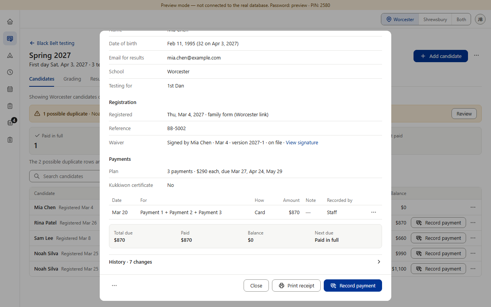
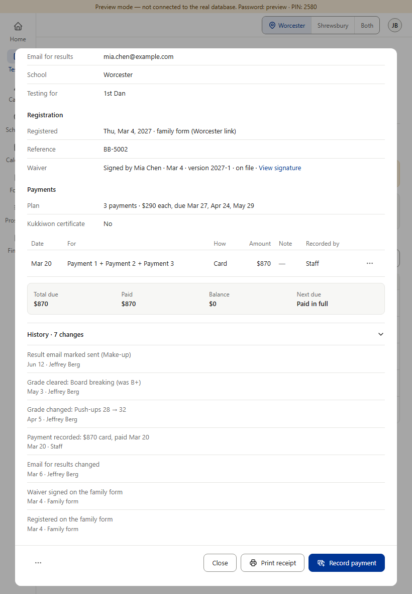
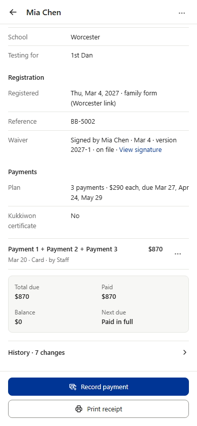
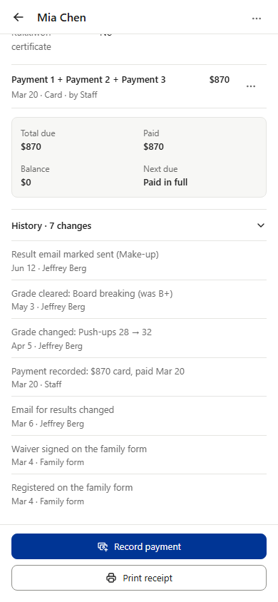
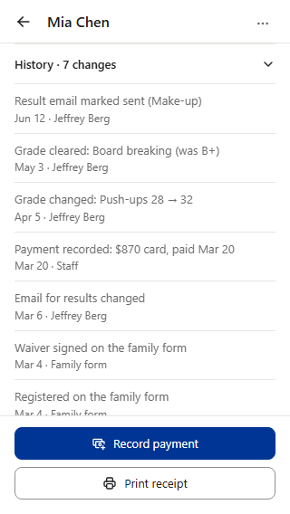

PC


The shared History line (as Star and Camps): closed it reads “History · 7 changes ›”; a tap opens the list right there, newest first — what changed, then the date · who. Sample: the preview’s Mia Chen. Grade lines here are option B of the question that follows.




